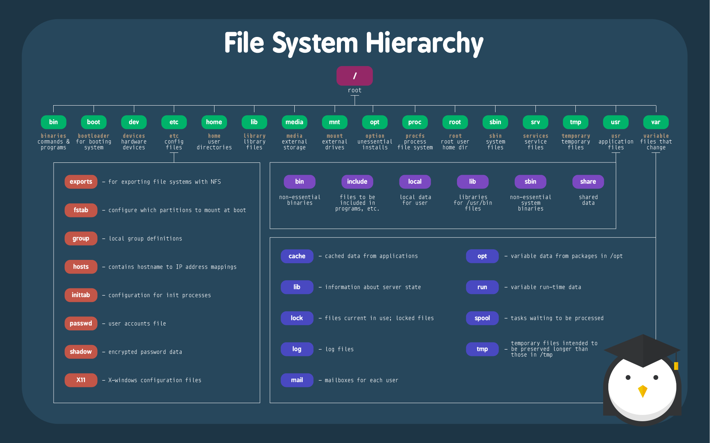

在 Linux 系统中，一切都是文件，理解文件系统非常有必要。
Linux 最传统的磁盘文件系统使用的是 EXT2 这个啦！所以要了解 Linux 的文件系统就得要由认识 EXT4 开始！x

1. 文件系统
1.1 文件系统种类
我们仔细翻阅资料的话，会发现文件的种类特别的多！
Linux 文件系统
ext2ext3ext4xfsbtrfsreiserfsjfsswap(交换分区)iso9660(光盘)
Windows
fat32ntfs
Unix
FFSUFSJFS2
网络文件系统
NFSCIFS
集群文件系统
GFS2OCFS2
分布式文件系统
cephmoosefsmogilefsGlusterFSLustre
1.2 文件系统划分
这里的文件系统的划分，主要是根据类型和功能来讲的。
根据其是否支持 "journal" 功能
- 日志型文件系统:
ext3,ext4,xfs, … - 非日志型文件系统:
ext2,vfat, …
文件系统的组成部分 内核中的比用户控件的效率高
- 内核中的模块：
ext4,xfs,vfat - 用户空间的管理工具：
mkfs.ext4,mkfs.xfs,mkfs.vfat
Linux 的虚拟文件系统
VFS
1.3 常用文件系统
这里主要介绍 Linux 操作系统上面最为常用的 ext4 和 btrfs 文件系统。
[1] 第一种文件系统：ext4
近年来 ext2/3 暴露出了一些扩展性问题，于是便催生了 ext4。在 2008 年发布的 Linux2.6.19 内核中集成了 ext4 的 dev 版本。2.6.28 内核发布时，ext4 结束了开发版，开始接受用户的使用。
- 功能 -> 向后和向前兼容性
ext4给时间范围添加了两个位，从而让时间寿命再延长500年。ext4与ext3是向前兼容的，这样就可以将 ext3 文件系统挂载为ext4文件系统。- 为了充分利用
ext4的优势，必须实现文件系统的迁移，以转换和利用新的ext4格式。 - 基于秒的时间戳已经不够用，
ext4设计时间戳时考虑到未来的发展，它将时间戳的单位提升到纳秒。
- 伸缩性 -> 突破文件系统的限制
ext4支持的最大文件系统为1EB。ext4的区段采用分层的方法高效地表示小文件，并且使用区段树高效地表示大文件。ext4支持最大16TB的文件（假设由4KB的块组成），这个容量是ext3的8倍。ext4使用区段取代ext3的机制，从而改善了空间的分配，并且支持更加高效的存储结构。- 区段 是一种表示一组相邻块的方式。使用区段减少了元数据，因为区段维护关于一组相邻块的存储位置的信息（从而减少了总体元数据存储），而不是一个块的存储位置的信息。
- 性能 -> 文件级预分配
- 这种优化的关键是延迟物理块的分配，直到需要在磁盘上写这些物理块时才对其进行分配并写到相邻的块。
- 这类似于持久化预分配，惟一的区别是文件系统会自动执行这项任务。不过如果预先知道文件的大小时，持久化预分配是更好的选择。
- 尽管区段能够将相邻块划分为片段，但另一种更强大的方法是按照所需的大小预分配比较大的相邻块（
XFS以前就是采用这种方法）。 ext4通过一个新的系统调用来实现这个目的，这个调用将按照特定的大小预分配并初始化文件。然后，您就可以写入必要的数据，并为数据提供不错的读性能。- 相邻块相关的优化，即针对
ext4的块分配器。ext4使用块分配器修复了这个问题，它能够在磁盘上一次分配多个块。与前面其他优化一样，这个优化在磁盘上收集相关的数据，以实现相邻读优化。
- 可靠性 -> 执行文件系统日志校验和
- 和
ext3一样，ext4也是一个日志文件系统。日志记录 就是通过日记（磁盘上相邻区域的专门循环记录）记录文件系统的变更的过程。 - 但是即使进行日志记录，如果日志出现错误仍然会导致文件系统损坏。为了解决这个问题，
ext4对日志执行校验和，确保有效变更能够在底层文件系统上正确完成。 ext4支持根据用户需求采用多种模式的日志记录。例如，ext4支持Writeback模式，它仅记录元数据；或Ordered模式，它记录元数据，但写为元数据的数据是从日志中写入的；或Journal模式（最可靠的模式），它同时记录元数据和数据。注意，虽然Journal模式是确保文件系统一致的最佳选择，但它也是最慢的，因为所有数据都要经过日志。- 尽管
ext4添加一些特性来减少文件系统的碎片（比如将相邻块分配为区段），但随着系统使用时间的增加，碎片是难以完全避免的。因此出现了在线碎片整理工具，它们可以对文件系统和单个文件执行碎片整理，从而改善性能。在线碎片整理程序是一个简单的工具，它将文件复制到引用相邻区段的新ext4 inode。 - 在线碎片整理还可以减少检查文件系统所需的时间（
fsck）。ext4将未使用的块组标记到inode表中，并让fsck进程忽略它们以加快检查速度。当操作系统因内部损坏（随着文件系统变大，这是不可避免的）而检查文件系统时，ext4的设计方式将能够提高总体可靠性。
- 和
[2] 第二种文件系统：btrfs
文件系统似乎是内核中比较稳定的部分，多年来，人们一直使用 ext2/3，ext 文件系统以其卓越的稳定性成为了事实上的 Linux 标准文件系统。似乎 ext 就将成为 Linux 文件系统的代名词。然而当您阅读很多有关 ext4 的文章时，会发现都不约而同地提到了 btrfs，并认为 ext4 将是一个过渡的文件系统。
- 扩展性相关的特性
- 基于
Extent的文件存储 btrfs文件系统中所有的metadata都由BTree管理。- 现代很多文件系统都采用了
extent替代block来管理磁盘。 Extent就是一些连续的block，一个extent由起始的block加上长度进行定义。- 使用 BTree 的主要好处在于查找，插入和删除操作都很高效。可以说
BTree是btrfs的核心。 - 在
ext2中inode区是被预先固定分配的，且大小固定，比如一个100G的分区中，inode table区中只能存放131072个inode，这就意味着不可能创建超过131072个文件，因为每一个文件都必须有一个唯一的inode。 - 为了解决这个问题，必须动态分配
inode。每一个inode只是BTree中的一个节点，用户可以无限制地任意插入新的inode，其物理存储位置是动态分配的。所以btrfs没有对文件个数的限制。 SSD采用flash memory技术，内部没有磁盘磁头等机械装置，读写速率大幅度提升。flash memory有一些不同于HDD的特性。flash在写数据之前必须先执行擦除操作；其次，flash对擦除操作的次数有一定的限制，在目前的技术水平下，对同一个数据单元最多能进行约100万次擦除操作，因此，为了延长flash的寿命，应该将写操作平均到整个flash上。- 虽然
SSD在硬件层面做了很多努力，但毕竟还是有限。btrfs用户可以使用mount参数打开对SSD的特殊优化处理。btrfs用户可以使用mount参数打开对SSD的特殊优化处理。
- 基于
- 数据一致性相关的特性
- 所谓
COW，即每次写磁盘数据时，先将更新数据写入一个新的block，当新数据写入成功之后，再更新相关的数据结构指向新block。 COW只能保证单一数据更新的原子性。但文件系统中很多操作需要更新多个不同的元数据，比如创建文件需要修改以下这些元数据。任何一个步骤出错，文件便不能创建成功，因此可以定义为一个事务。- 由于硬件原因，从磁盘上读出的数据会出错。比如
block A中存放的数据为0x55，但读取出来的数据变是0x54，因为读取操作并未报错，所以这种错误不能被上层软件所察觉。 - 解决这个问题的方法是保存数据的校验和，在读取数据后检查校验和。如果不符合，便知道数据出现了错误。
Btrfs采用单独的checksum Tree来管理数据块的校验和，把checksum和checksum所保护的数据块分离开，从而提供了更严格的保护。
- 所谓
- 多设备管理相关的特性
Btrfs缺省情况下对metadata进行RAID1保护。Btrfs很好的支持了软件RAID，RAID种类包括RAID0，RAID1和RAID10。Subvolume是很优雅的一个概念，即把文件系统的一部分配置为一个完整的子文件系统。- 这种模型有很多优点，比如可以充分利用 disk 的带宽，可以简化磁盘空间的管理等。
Btrfs支持动态添加设备，在系统中增加磁盘之后，可以使用btrfs的命令将该设备添加到文件系统中。- 为了利用设备空间，
Btrfs将磁盘空间划分为多个chunk，每个chunk使用不同的磁盘空间分配策略。 Subvolume可以作为根目录挂载到任意mount点。subvolume是非常有趣的一个特性，有很多应用。- 快照是对文件系统某一时刻的完全备份。建立快照之后，对文件系统的修改不会影响快照中的内容。这是非常有用的一种技术。
- 快照一般是只读的，当系统支持可写快照，那么这种可写快照便被称为克隆。克隆技术也有很多应用。比如在一个系统中安装好基本的软件，然后为不同的用户做不同的克隆，每个用户使用自己的克隆而不会影响其他用户的磁盘空间。非常类似于虚拟机。
- 其他特性
Delay allocationInline file- 目录索引
Directory index - 预分配
2. 文件系统的对比
主要对比 Linux 和 Windows 文件系统的区别和特点。
2.1 Ext2 文件系统
假设一个文件的属性和权限信息是存放在 3 号的 inode 上，而文件的实际数据是存放在 1、4、6、11 这四个 block 中，那么当操作系统要访问该文件时，就能据此来排列磁盘的阅读顺序，可以扫描一次就将 4 个 block 内容读出来。这种访问方式称为索引式文件系统。而且 ext 在每两个文件之间都留有相当巨大的空闲空间。当文件被修改、体积增加时，它们通常有足够的空间来扩展。因此在一定程度上保证了 block 的访问范围不会跨度很大，减小了磁头的移动距离。
2.2 FAT32 文件系统
在往 FAT 文件系统中存入一个文件时，系统会尽量存放在靠近磁盘开始的地方。当你存入第二个文件时，它会紧挨着第一个文件。当进行频繁的删除修改后，block 就会分散的特别厉害。FAT 文件系统没有 inode 的存在，所以不能一下子将文件的所有 block 在一开始就读取出来。每个 block 号码都记录在前一个 block 当中，形成一个 block 链。当我们需要读取文件的时候，就必须一个一个地将 block 读出，例如上图的读出顺序为 1、6、3、12。这就会导致磁头无法在磁盘转一圈就获得所有数据，有时候需要来回转好几圈才能读取到这个文件，导致文件读取性能极差。这就是 Windows 经常需要碎片整理的原因——使离散的数据汇合在一起。
2.3 磁盘碎片整理
Windows系统为什么需要磁盘碎片整理？
相信我们看了上面的内容，一定理解了这个原因是怎么导致的。及时 Windows 之后开发了 NTFS 文件系统。NTFS 文件系统虽然智能了一点，在文件周围分配了一些“缓冲”的空间，但经过一段时间的使用后，NTFS 文件系统还是会形成碎片。由于 ext 是索引式文件系统，所以基本上不太需要经常进行磁盘碎片整理。
2.4 相关知识扩展
以下是我画了几张图，来加深你对于文件系统的理解。
3. 创建文件系统
介绍几种常见的创建文件系统的，命令使用方法。
3.1 mkfs 命令
命令格式：
mkfs [options] [-t type] [fs-options] device [size]
参数选项：
-V- 详细显示模式
-t- 给定档案系统的型式，
Linux的预设值为ext2
- 给定档案系统的型式，
-c- 在制做档案系统前，检查该
partition是否有坏轨
- 在制做档案系统前，检查该
-l bad_blocks_file- 将有坏轨的
block资料加到bad_blocks_file里面
- 将有坏轨的
block- 给定
block的大小
- 给定
-L- 建立
lable
- 建立
Note：
device预备检查的硬盘partition，例如：/dev/sda1，必选。- 在使用
mkfs的时候，在命令行中输入 mkfs 之后输入.按tab键来查看支持的分区类型。 mkfs本身并不执行建立文件系统的工作，而是去调用相关的程序来执行。例如，若在-t参数中指定ext2，则mkfs会调用mke2fs来建立文件系统。使用时如省略指定【块数】参数，mkfs会自动设置适当的块数。
3.2 mke2fs 命令
ext 系列文件系统专用管理工具
命令格式：
$ mke2fs -O journal_dev \
[ -b block-size ] [ -L volume-label ] [ -n ] \
[ -q ] [ -v ] external-journal [ fs-size ]
参数选项：必要参数
<设备名称>- 与设备对应文件，例如/dev/hd1
-b<块大小>- 指定块大小
-c- 在创建文件系统之前检查指定的设备
-g<块组数量>- 指定一个块组中块的数量
参数选项：选择参数
-t {ext2|ext3|ext4}- 指定文件系统类型
-b {1024|2048|4096}- 指定块大小
-N #- 为数据空间创建个多少个 inode
-m #- 为管理人员预留的空间占据的百分比
-O FEATURE[,...]- 启用指定特性
-O ^FEATURE- 关闭指定特性
-E<扩展参数>- 为要创建的文件系统指定一些参数
-f<不连续区段大小>- 不知道连续区段的大小
-F- 强制执行，即使指定设备没有被挂载或者不是块设备
-l<文件>- 从指定文件中读取坏的块列表
-i<字节>- 指定每个 inode 的字节数
-j- 创建使用 ext3 卷号的文件系统
-J<扩展参数>- 为使用 ext3 卷号的文件系统指定一些参数
-L- 设置创建的文件系统的标签
-q- 执行时不显示任何信息
-V- 显示版本信息
3.3 mkswap 命令
添加扩展的 swap 分区
命令格式：
mkswap [options] device [size]
参数选项：
-c- 建立交换区前，先检查是否有损坏的区块。
-p<页大小>- 使用指定的页大小
-L<标签>- 指定一个标签，伺候的
sawpon可以使用这个标签
- 指定一个标签，伺候的
实战演示：
# 创建交换分区文件
[root@linux ~]# dd if=/dev/zero of=/extra-swap bs=1024 count=1024
# 格式化交换分区
[root@linux ~]# mkswap /extra-swap 1024
# 加载交换分区
[root@linux ~]# swapon /extra-swap
Note：
- 调整其分区的
ID为82。 - [交换区大小] 指定交换区的大小，单位为
1024字节。
3.4 blkid 命令
块设备属性信息查看
命令格式：
blkid [OPTION]... [DEVICE]
参数选项：
-o<标签>- 指定输出格式 (full、value、list\device\udev)
-s<标签>- 显示指定标签信息 (LABEL、UUID、TYPE)
-U UUID- 根据指定的 UUID 来查找对应的设备
-L LABEL- 根据指定的 LABEL 来查找对应的设备
实战演示：
# 显示指定设备UUID
[root@localhost ~]# blkid -s UUID /dev/sda5
/dev/sda5: UUID="cad7349a-601d-4df4-a46b-90e1ffc29b1b"
# 显示所有设备UUID
[root@localhost ~]# blkid -s UUID
/dev/sda5: UUID="cad7349a-601d-4df4-a46b-90e1ffc29b1b"
/dev/sda1: UUID="d7899bc2-b08e-48cd-b904-54956c085951"
# 显示指定设备LABEL
[root@localhost ~]# blkid -s LABEL /dev/sda5
/dev/sda5: LABEL="Disk E"
# 显示所有设备LABEL
[root@localhost ~]# blkid -s LABEL
/dev/sda1: LABEL="M-fM-^VM-0M-eM-^JM- M-eM-^MM-7"
/dev/sda5: LABEL="Disk E"
# 显示所有设备文件系统
[root@localhost ~]# blkid -s TYPE
/dev/sda5: TYPE="swap"
/dev/sda1: TYPE="ext4"
# 显示所有设备
[root@localhost ~]# blkid -o device
/dev/sda5
/dev/sda1
#以列表方式查看详细信息
[root@localhost ~]# blkid -o list
device fs_type label mount point UUID
------------------------------------------------------
/dev/sda5 swap cad7349a-601d
/dev/sda1 ext4 / d7899bc2-b08e
3.5 e2label 命令
管理 ext 系列文件系统的 LABEL
命令格式：
e2label device [ new-label ]
3.6 tune2fs 命令
重新设定 ext 系列文件系统可调整参数的值
命令格式：
tune2fs [OPTION]... [DEVICE]
参数选项：
-l- 查看指定文件系统超级块信息
-c max-mount-counts- 设置强制自检的挂载次数，如果开启，每挂载一次 mount conut 就会加 1，超过次数就会强制自检
-i interval-between-checks[d|m|w]- 设置强制自检的时间间隔[d 天 m 月 w 周]
-m #- 保留块的百分比
-j- 将 ext2 文件系统转换为 ext3 类型的文件系统
-L 'LABEL'- 类似 e2label 的功能，可以修改文件系统的标签
-r reserved-blocks-count- 调整系统保留空间
-o [^]mount-option[,...]- 设置或清除默认挂载的文件系统选项
-O- 文件系统属性启用或禁用
-U UUID- 修改 UUID 号
实战演示：
# 设置强制检查前文件系统可以挂载的次数
tune2fs -c 30 /dev/hda1
# 关闭强制检查挂载次数限制
tune2fs -c -l /dev/hda1
# 10天后检查
tune2fs -i 10 /dev/hda1
# 1天后检查
tune2fs -i 1d /dev/hda1
# 3周后检查
tune2fs -i 3w /dev/hda1
# 半年后检查
tune2fs -i 6m /dev/hda1
# 禁用时间检查
tune2fs -i 0 /dev/hda1
# 添加日志功能，将ext2转换成ext3文件系统
tune2fs -j /dev/hda1
# 调整/dev/hda1分区的保留空间为40000个磁盘块
tune2fs -r 40000 /dev/hda1
3.7 dumpe2fs 命令
- dumpe2fs 命令用于打印“ext”文件系统的超级块和块组信息。
命令格式：
dumpe2fs [-bfhixV] [-o superblock=] [-o blocksize=] device
参数选项：
-b- 打印文件系统中预留的块信息
-ob<超级块>- 指定检查文件系统时使用的超级块
-OB<块大小>- 检查文件系统时使用的指定的块大小
-h- 仅显示超级块信息
-i- 从指定的文件系统映像文件中读取文件系统信息
-x- 以 16 进制格式打印信息块成员
实战演示：
# 查看sda8磁盘信息
[root@localhost ~]$ sudo dumpe2fs /dev/sda8
dumpe2fs 1.41.12 (17-May-2010)
Filesystem volume name:
Last mounted on: /
Filesystem UUID: a0794ac7-6cda-4a45-aa45-a97bd32f8c82
Filesystem magic number: 0xEF53
Filesystem revision #: 1 (dynamic)
3.8 fsck 命令
文件系统检测
命令格式：
fsck [ -sACVRTNP ] [ -t fstype ] [filesys ... ] [--] [ fs-specific-options ] [[ ]]
参数选项：
-t FS_TYPE- 检查那个文件格式的文件系统，类似
fsck.FS_TYPE。
- 检查那个文件格式的文件系统，类似
-a- 不提问，自动修复文件系统(请小心使用此选项)。注意 e2fsck(8) 支持 -a 仅仅是为了向前兼容。这个选项被映射到
e2fsck的-p选项，那比较安全一点，不像大多数文件系统检查器支持的 -a 那样。
- 不提问，自动修复文件系统(请小心使用此选项)。注意 e2fsck(8) 支持 -a 仅仅是为了向前兼容。这个选项被映射到
-r- 交互式地修复文件系统错误(询问确认)。注意: 如果多个 fsck 在并行执行，这不是一个好想法。还要注意
e2fsck的默认行为；它也只为了向前兼容才保留这个选项。
- 交互式地修复文件系统错误(询问确认)。注意: 如果多个 fsck 在并行执行，这不是一个好想法。还要注意
-R- 当使用 -A 标志来检查所有文件系统时，跳过 root 文件系统 (它可能已经被挂载为可读写)。
-A- 搜索
/etc/fstab文件，一次检查所有在文件中有定义的文件系统。这个选项典型地用在 /etc/rc 系统初始化文件中，而不使用多条命令来分别检查各独立的分区。
- 搜索
Note：
- 只输入
fsck命令，版本号。 FS_TYPE一定要与分区上已经文件类型相同。
实战演示：
# 检查/dev/sda1是否有问题，如发现问题便自动修复
[root@localhost ~]# e2fsck -a -y /dev/sda1